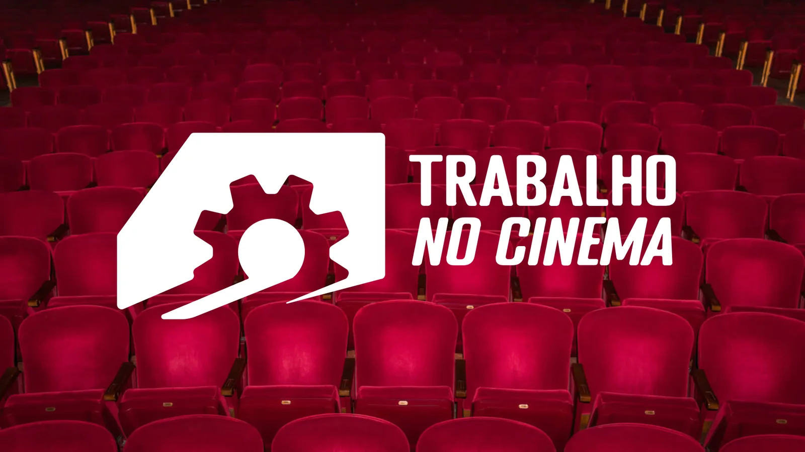
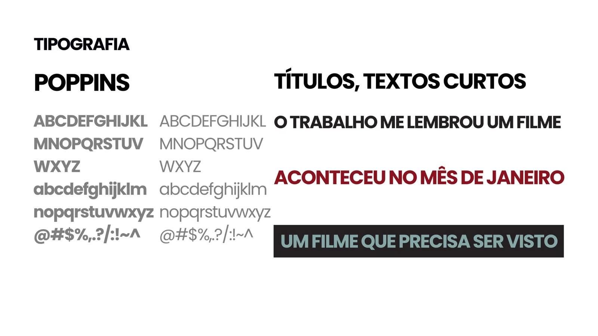
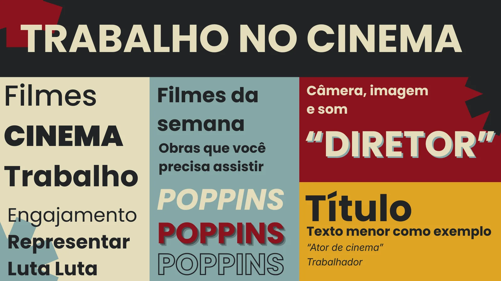
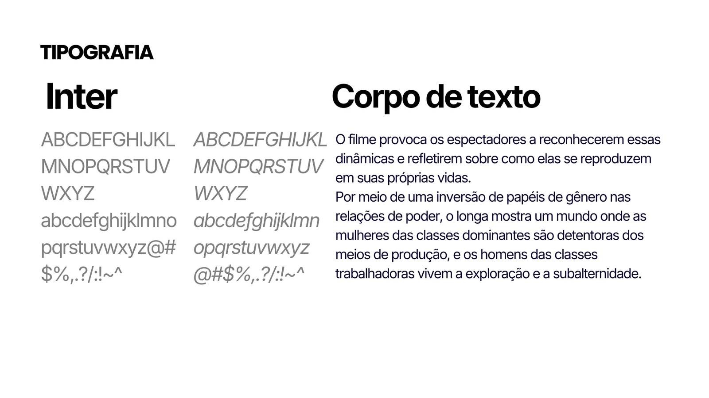
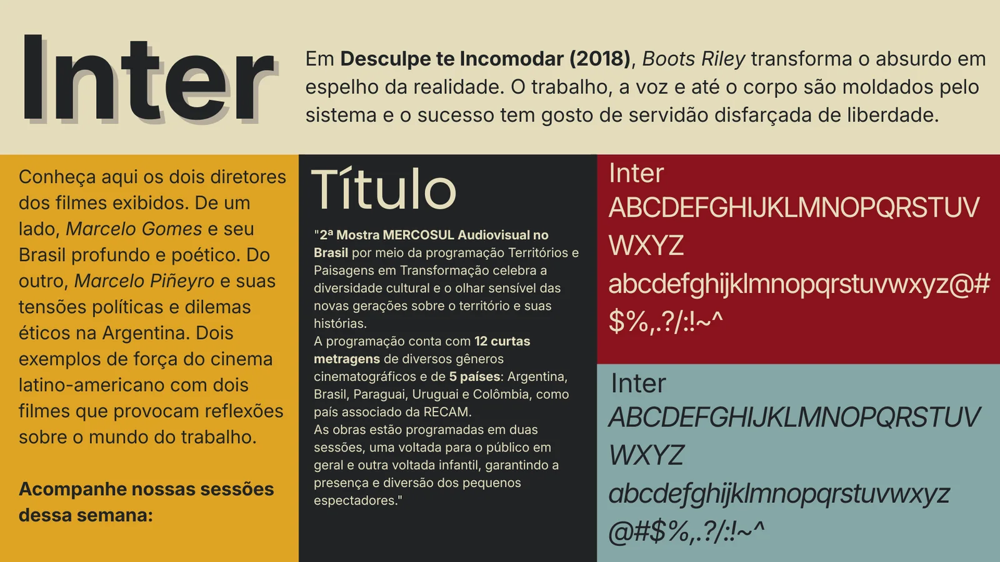
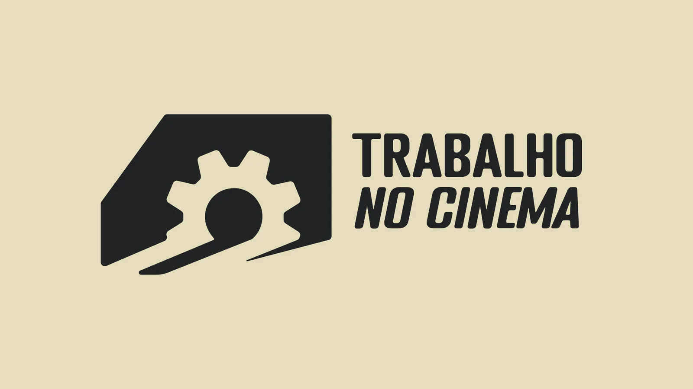
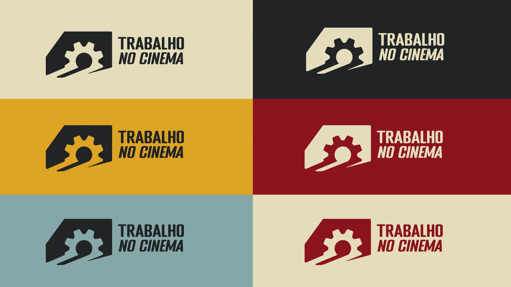
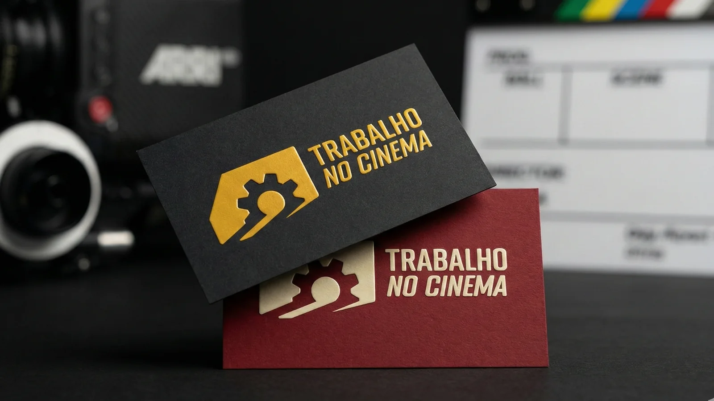
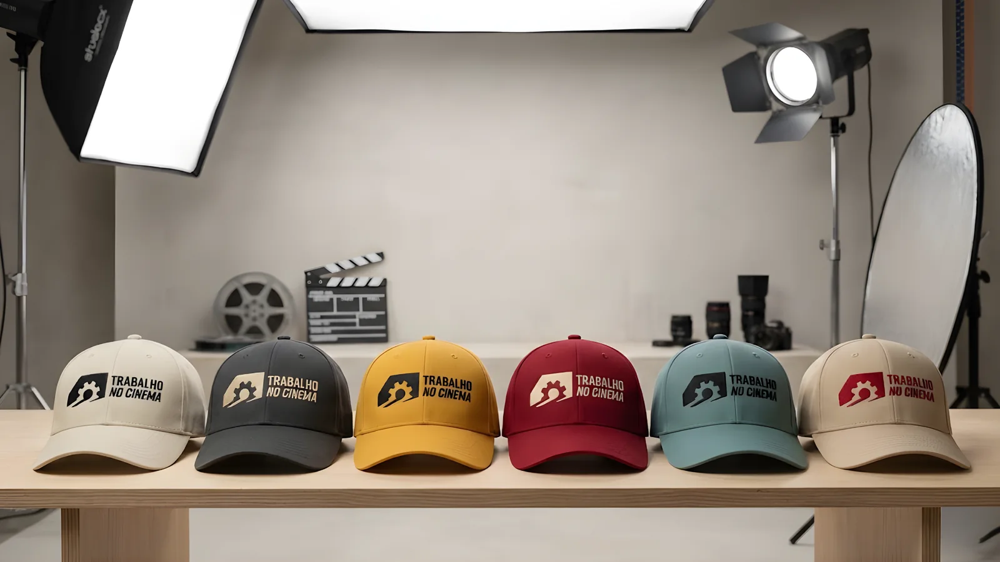

Trabalho no Cinema
O Trabalho no Cinema é um projeto de extensão da UFC que leva filmes sobre o mundo do trabalho para comunidades e abre uma roda de debate no fim de cada sessão. Trabalhei em equipe na identidade visual, e o que está aqui é a marca, a paleta, as fontes e as aplicações.

Paleta
Preto e bege sustentam a base e garantem contraste nas peças gráficas. O vermelho, o dourado e o verde acinzentado entram como acentos, sempre em menor área, para dar variação sem quebrar a leitura.
Tipografia
Fonte primária para Títulos e chamadas, fornece leitura agradável nestes casos.
Fonte primária para textos mais densos, porque é confortável de ler em blocos longos.
Fonte aplicada no logo com uma leve alteração.




Marca



A marca fora da tela
Aplicações da marca em cartões e bonés, com variações de cor

Aplicação em bonés, uma cor da paleta em cada peça.